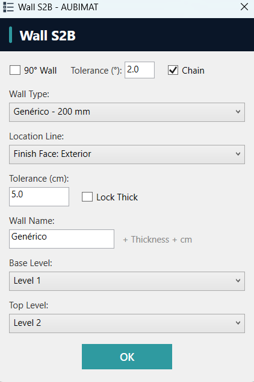
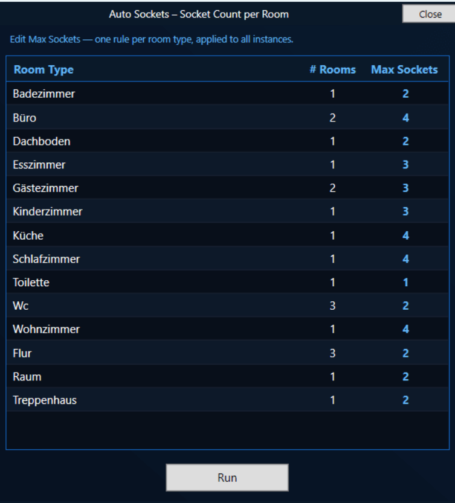
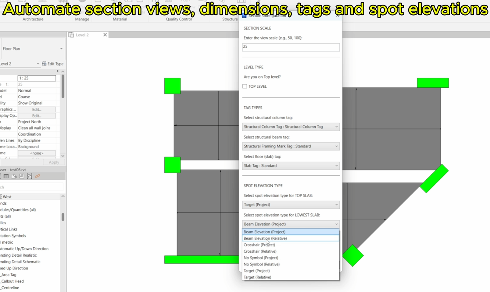
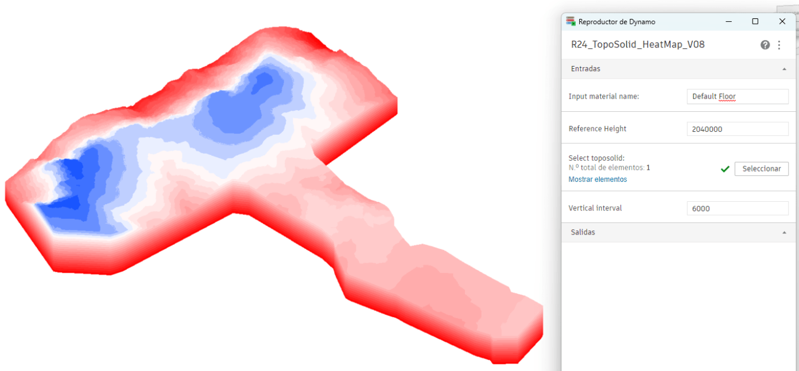

Civil Engineer with 4+ years of BIM automation. I build Revit API tools in
Python and C# that translate engineering rules into automated 3D geometry —
pipe networks from CAD drawings, structural framing from walls, ceiling geometry from solid
Boolean operations. 25+ production PyRevit tools on live US projects,
a full C# add-in targeting Revit 2022–2026, and 50+ Dynamo scripts
spanning MEP, architecture, and QC. B2 English (TOEFL ITP 570).
Currently pursuing a Master's in BIM Management at EADIC.
Extracts solid geometry from walls and structural columns at fine detail level; identifies top and bottom faces by normal direction
Projects all boundary curves to the target elevation, extrudes, then runs Boolean union and difference operations to compute the final room boundary solid
Creates ceiling/floor elements and locks edges to wall faces so they update automatically when walls move
Full floor of ceilings in one operation. Locked edges update if the wall moves. Implemented in both Python (PyRevit) and C# (add-in).
Wall S2B — Scan-to-BIM Configurator
Python
"3-point wall placer: measure thickness from point cloud, auto-create matching wall type, place with live preview."
Config UI

Pick start and end point for the wall axis; pick a third point on the point cloud face — perpendicular projection gives the measured real-world thickness
Matches thickness against existing wall types; if none found, duplicates and scales the compound structure layers automatically
Live preview wall visible during the third-point pick — automatically rolled back on cancel, committed on confirm
4-step process reduced to 3 clicks. Used on 30k–60k m² industrial buildings in the USA. 🇺🇸
Full ribbon with tabs, panels, pulldown buttons, icons, and tooltips — deployable via manifest without installer
Shared geometry utilities for solid extraction, face projection, Boolean operations, and curve loop construction; worksharing-aware with editability checks before modifying elements
WPF dialogs with unit-aware inputs, JSON settings persistence, and multi-version conditional compilation targeting Revit 2022 through 2026
"Rule-based socket placer: room type defines height rules, 80+ obstacle checks per room, zero clashes on first run."
Room Rules UI

Room type drives height rules — kitchen 1200mm, living 300mm, bathroom 1100mm — boundary projected onto the actual wall inner face geometry
Door and window swing arcs define exclusion zones; 3D furniture bounding boxes define clearance volumes — sockets skip any conflicting position
Each candidate position validated against the room boundary before placement
43 sockets placed, 30 skipped, 3-level model — full floor in one run. Freelance delivery. 🇩🇪Germany
FacadeKit — Panel & Gutter Auto-Placement
Python
"Façade configurator: catalog sizes (600→150mm), 2D zone decomposition, gutter splits at openings."
Reads exterior wall face geometry and decomposes the facade zone into panel segments using bin-packing from catalog sizes with even gap distribution
Detects door and window openings automatically; places gutters above each opening and splits long runs at 3000mm maximum with recursive segment partitioning
Handles any wall orientation using wall-local coordinate transforms for accurate placement
Full facade paneled from 0 — previously done manually panel by panel. Freelance delivery. 🇳🇱Netherlands
Cross System Tap — MEP System Bridge
Python
"Solved an undocumented Revit API limitation: connect pipes from different MEP systems without system reassignment."
Connecting pipes from different MEP systems causes Revit to silently merge one system into the other — no documented solution exists in the official API references
Developed a multi-step workaround using temporary geometry to bridge the system boundary while preserving each pipe's original system assignment
Reliable across all MEP system type combinations — discovered through systematic debugging and iterative testing
100% reliable cross-system tap. Pattern not documented in official API references — discovered through systematic debugging. ★ 9.7/10 client rating.
Str Column Sections — Auto Section Generator
Python
"Generates X and Y section views for every structural column — with dimensions, tags, and spot elevations, all in one run."
Output

Collects structural columns in the active floor plan and creates paired X and Y section views per column at user-configured scale with configurable tag types and automatic level detection
Smart dimensioning: column height referenced from detail geometry; column widths compared across the top-2 tallest columns with ±40mm tolerance to align dimensions consistently
Auto-tags structural columns, beams, and floors; adds spot elevations for floors that don't sit exactly at a Revit level
Full structural documentation set in one run — all selected levels, all columns, paired sections with dimensions and annotations.
Dynamo Portfolio — 50+ Scripts
MEP Automation — Pipes, Conduits & Sprinklers from CAD
Dynamo
"CAD layer → Revit MEP element pipeline across fire protection, plumbing, and electrical disciplines."
Export: room and element data collected and written to formatted Excel output
Import: Excel data drives workset creation, material parameters, and type naming; v1 and v2 variants with improved type mapping and error handling
Eliminates one-by-one Revit UI entry for bulk data population. 🇺🇸
Topo Heat Map 🇬🇧UK
Dynamo
"Transforms Revit topographic solid into a color-coded elevation heat map — 8 progressive versions delivered."
Output

Per-face elevation extraction from topographic solid; elevation range mapped to a color gradient algorithm
Performance optimization for large terrain solids; configurable reference height and vertical interval
8 versions (V01–V08). Professional terrain visualization delivered as freelance project.
Grasshopper / Rhino Inside Revit
Grasshopper in Revit — LearnGrasshopper Course
Grasshopper
"Completed LearnGrasshopper's official Grasshopper-in-Revit course; applied workflows to production automation and client projects."
Course modules covered: element selection, creation, parameter management, views/sheets, annotations, and IFC property set mapping via Rhino Inside Revit
Applied RIR skills to build a parametric formwork definition that reads structural geometry and generates corresponding Revit components bidirectionally
Bidirectional Rhino↔Revit workflows used in real client deliveries — analysis results driving Revit family geometry directly
Course knowledge immediately applied to 3 freelance deliveries across Spain, Saudi Arabia, and internal automation work.
Acoustic Smart Panel System 🇪🇸Spain
Grasshopper
"Grasshopper-driven acoustic panel families with performance-linked geometry, IFC export, and version-controlled families."